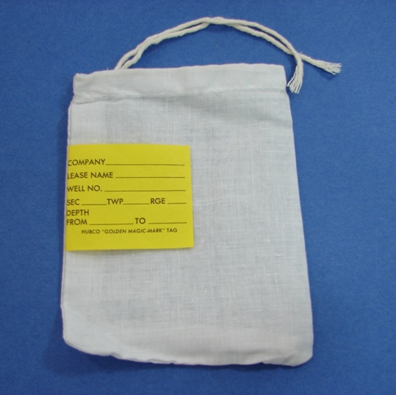

Gloves are used all the time in our plants.
We have four sizes of gloves: small, medium,
large, and x-large. Aside from regular
plastic gloves, we also have special gloves
for people that handle product all day. These
gloves aren't thrown away and you don't need
to replace them all day.
We have soap and sanitizer dispensers throughout the plants. Employees are
required to use them every time they enter the plant for the start
of their shift, after they return from their breaks, and any other time
they exit the production line.


To prevent hair from falling into our products, we require that everyone
wear a hair net. If someone has a beard, we provide beard nets as well.
Every couple hours, we take samples of our frozen products for lab testing.
We collect two types of samples: normal lab samples, which are taken once and
aren't touched until analysis, and a composite lab sample, which contains product
sampled throughout the day.
